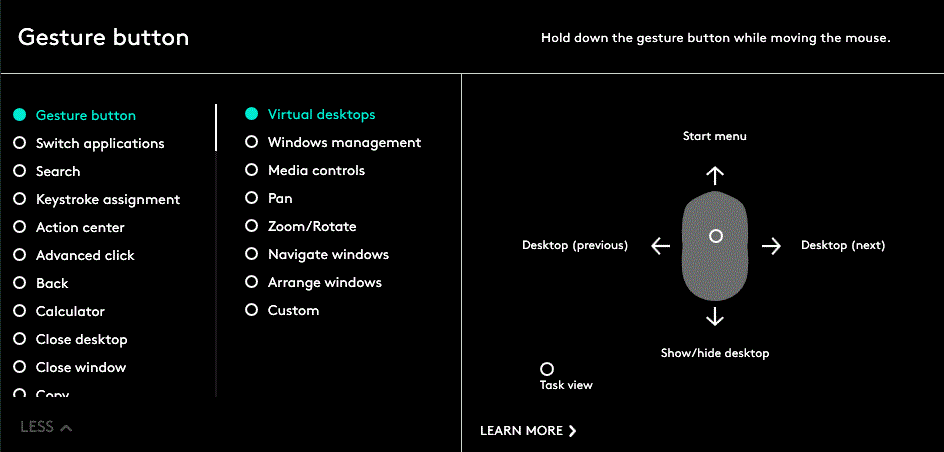

Movimenti delle dita
I gesti consentono di interagire con il sistema operativo e le applicazione in modo semplice e intuitivo.
Utilizzare i gesti per ingrandire documenti, sfogliare pagine Web, ruotare immagini e molto altro ancora.
Logitech Options consente di eseguire una serie di gesti con i mouse Logitech compatibili.
Attivazione dei set di gesti
Fare clic sulla scheda Mouse, quindi fare clic su qualunque pulsante evidenziato.
Quando il <strong>pulsante dei gesti</strong> viene selezionato nell’elenco delle azioni dei pulsanti, i set di gesti disponibili vengono visualizzati sulla destra, insieme alla corrispondente guida visiva.

Fare clic per selezionare il pulsante per il set di gesti che si desidera attivare. Il set selezionato rimane attivo fino a quando non si seleziona un altro set.
Nota: è anche possibile assegnare l’azione del gesto ad altri pulsanti. Se l’azione del gesto non è assegnata ad alcun pulsante, i gesti non sono disponibili.
Esecuzione dei gesti
Per eseguire un gesto, tenere premuto il pulsante dei gesti e muovere il mouse verso sinistra, destra, l’alto o il basso. Fare clic sul pulsante dei gesti senza muovere il mouse per eseguire l’azione associata.